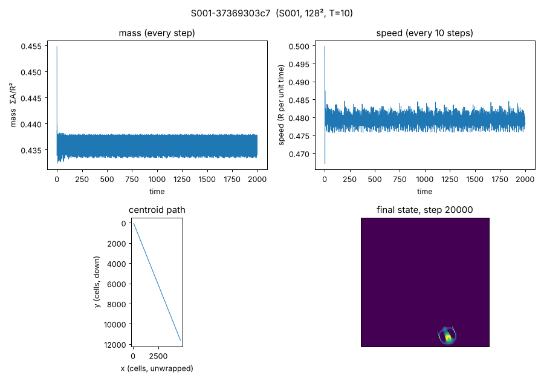
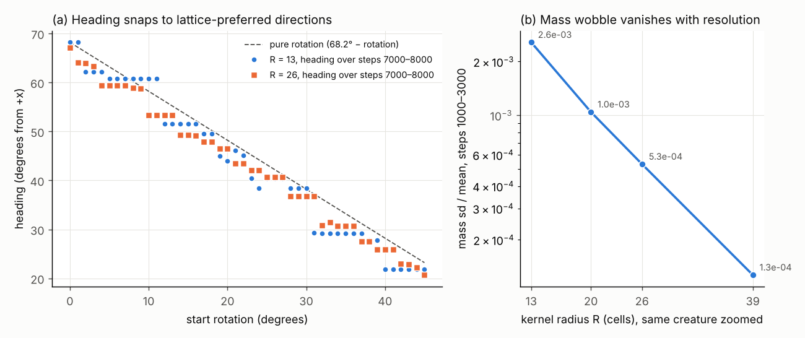

Room 2 · A heartbeat that was the grid
The wobble that wasn't
On the first night, every measurement of Orbium showed a pulse. Its mass rose and fell by about a quarter of a percent, regularly, every 4.32 steps. A creature with a heartbeat is a much better story than a creature without one, and in a project searching for something worth calling Sir Wobbles, a wobble was hard to resist.

Three tests a heartbeat should pass
If the pulse belonged to the animal, it should look the same whichever way the animal faces and however finely we draw it. Lane 1 suspected the grid; Lane 7, the project's hostile reviewer, wrote down in advance what result would count against that idea, then ran it.

The pulse's size and period change with the creature's heading and with the grid's resolution, and the size falls towards zero as the grid gets finer.
The wobble is a lattice-sampling artifact C003indep. checked: two lanes, with two different programs, found the same collapse. As a property of the organism, the 4.32-step oscillation is C004num. fragile.
The first explanation was wrong, and stays on display
Lane 1's first account was neat: the period is just the time Orbium takes to cross one grid column, 1/|vx|. At R = 13 and the catalogue heading that gives exactly 4.32 steps. It was proposed with a test attached, and the test failed.
Across resolutions, the single-column rule held in only 6 of 17 runs (Lane 3). At R = 20 and R = 26 the strongest line in the spectrum was a mixture of x and y crossings, not the x crossing alone (Lane 7).
That wording is C005refuted. The broader lattice account survives: the period sits on some low-order combination of the two crossing rates in 14 of 16 headings, against 1.45 expected by chance C006observed. Nobody yet knows which combination will dominate at a given heading.
So this wobble is not a heartbeat. It is the grid, showing through the animal, and it does not earn anyone a name. The search goes on; the Night 1 numerical-ecology expedition is now asking which of Orbium's other traits survive when resolution and timestep change.